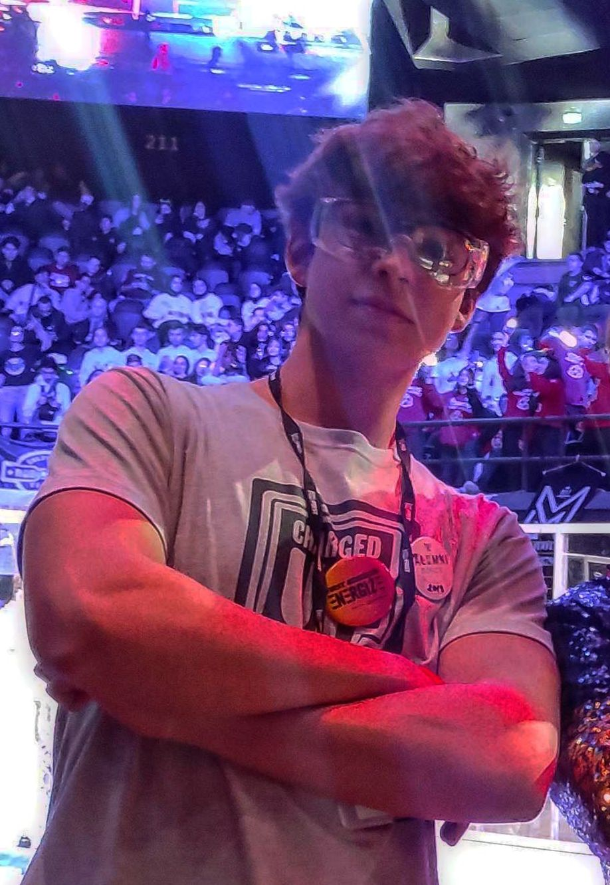

Hüseyin Umut Işık
CS @ METU · Research Intern @ Harvard Medical School

About
I work on medical image analysis at the QUIN research group, Boston Children's Hospital / Harvard Medical School. My interests are computer vision and deep learning, mostly vision-language models for CT and monocular depth estimation.
On the side I compete in quantum hackathons and co-run The Egg Club, a Sunday build club in Ankara.
News
- 2026 Co-founded The Egg Club, a free Sunday build club at METU, Ankara.
- 2026 A-Fuse, our airway segmentation method for pediatric and adult CT, is on arXiv and submitted to ISBI 2027.
- 2026 ARC-CT was accepted to the MICCAI 2026 TIA workshop.
- 2026 Co-founded Anytomic.
- 2026 Selected for Hack-Nation Venture Lab (Cohort 3).
- 2026 3rd place at the Hack-Nation Global AI Hackathon.
- 2026 Selected for Y Combinator Startup School 2026.
- 2026 LuMon was accepted to the CVPR 2026 AI4SPACE workshop.
- 2026 Joined the QUIN research group at Boston Children's Hospital / Harvard Medical School.
- 2026 1st place at the EPFL Quantum Hackathon.
- 2026 Honorable mention at MIT iQuHACK.
Publications
-
Anchored Fusion for Automated Airway Segmentation in Pediatric and Adult CT 2026
Hüseyin Umut Işık, Ege Mert Balcık, Duygu Atasoy, Asutosh Sahu, Şeyda Ertekin, Sıla Kurugöl.
A-Fuse takes the union of three airway models and keeps the connected component anchored to one of them, so the airway tree survives where largest-component selection picks the wrong object. 94.15% Dice on pediatric CT with no pediatric training data.
-
ARC-CT: Anatomy-Routed Contrastive Vision-Language Learning for 3D Chest CT 2026
Hüseyin Umut Işık, Mehmet Alp Özaydın, Sıla Kurugöl, Şeyda Ertekin.
A region-aware vision-language model for 3D chest CT. Organ-masked queries and a soft contrastive loss align scans with radiology reports, giving zero-shot classification of 18 abnormalities without manual labels.
-
LuMon: A Comprehensive Benchmark and Development Suite with Novel Datasets for Lunar Monocular Depth Estimation 2026CVPR 2026, AI4SPACE Workshop · arXiv
Aytaç Sekmen, Fatih Emre Güneş, Furkan Horoz, Hüseyin Umut Işık, Mehmet Alp Özaydın, Onur Altay Topaloğlu, Şahin Umutcan Üstündaş, Yurdasen Alp Yeni, Halil Ersin Söken, Erol Şahin, Ramazan Gökberk Cinbiş, Sinan Kalkan.
A benchmark of monocular depth estimation models on lunar simulations and real lunar data.
Experience
-
Research Intern, QUIN Research Group 2026 – presentHarvard Medical School / Boston Children's Hospital
Medical image analysis: vision-language models for chest CT (ARC-CT) and airway segmentation (A-Fuse).
-
Co-founder, The Egg Club 2026 – presentMETU, Ankara
A free build club every other Sunday at METU. People from different disciplines show up in the morning, build all day, and pitch in the evening.
-
Co-founder, Anytomic 2026 – presentBoston, MA
Started in the Hack-Nation Venture Lab.
-
Computer Vision Candidate Engineer 2025 – 2026MKE – Makine ve Kimya Endüstrisi
Object detection, tracking, and mapping for unmanned ground vehicles (UGVs).
-
Undergraduate Researcher 2024 – 2026METU ROMER
Event-based vision and monocular depth estimation; simulation environments for robotic perception, including lunar applications.
-
Software Team Member 2024 – 2026METU ANZU UAV
Autonomous UAV systems: path planning, real-time object detection, and tracking.
-
R&D Intern 2025HIDROAN
AI model optimization: RF-DETR object detection deployed with TensorRT, ONNX, and PyTorch on embedded edge hardware.
Programs
-
Y Combinator Startup School 2026 Jul 2026San Francisco, CA
Selected from 30,000+ applicants for a hand-picked group of founders and technical builders; two days of sessions with Jensen Huang, Sam Altman, Alexandr Wang and more.
-
Hack-Nation Venture Lab, Cohort 3 2026Remote
Selected for the venture track on the strength of a 3rd place finish at the Hack-Nation Global AI Hackathon, an MIT-born founder program.
Selected Awards & Projects
-
CENG488 Guided Research Symposium 20261st place · METU, Ankara, Turkey
Ranked 1st among 29 projects for Region-Aware CLIP for Chest CT, the work that became ARC-CT.
-
EPFL Quantum Hackathon 20261st place, Quandela Challenge · EPFL, Lausanne, Switzerland
-
IQM QuantumHACK 20251st place, Banco Santander Challenge · Madrid, Spain
Variational quantum classifier for risky investments, run on IQM quantum hardware in a 24-hour hackathon.
-
TEKNOFEST Quantum Technologies 20251st place · Turkey
Quantum neural networks for low-quality face recognition, 30-hour hackathon in Istanbul.
-
METU-DTX Hackathon 20252nd place · METU, Ankara, Turkey
Industrial defect classification model built from scratch in 6 hours.
-
BTK Academy CTF2nd place
4-day CTF camp on web application security and kernel vulnerabilities.
-
TÜBİTAK 2204-A 20221st place, regional finals · İzmir, Turkey
Cryptography algorithms and mathematics project.
Miscellaneous
Outside of work I draw, play football, solve Rubik's cubes, and run.